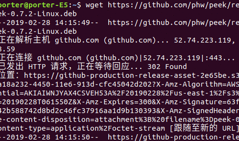

摘要
在写一些博客文章中，一般的png，jpg格式的图片往往满足不了复杂的演示过程，这时peek软件就能很好的帮助我们完成gif文件的制作，并且peek还是一个轻量级的gif制作软件，值得推荐，但是我根据官方的ubuntu安装步骤，发现确实能够安装，但是容易出问题，这里我把我的安装方法写出来，供安装后录制保存就死机的朋友参考。
- [x] Edit By Porter, 积水成渊,蛟龙生焉。
一、安装
获取deb包：
wget https://github.com/phw/peek/releases/download/v0.7.2/peek-0.7.2-Linux.deb安装依赖：
sudo apt install libsdl1.2debian ffmpeg libavdevice-ffmpeg56
- 安装peek：
sudo dpkg -i peek-0.7.2-Linux.deb
二、使用演示
